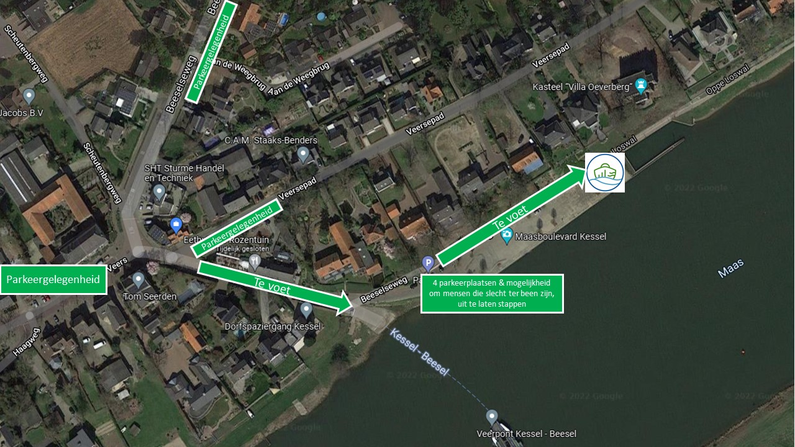

Openingstijden
Een sloep huren kan in juni van woensdag tot en met vrijdag van 12.00 – 18.00 uur en in het weekend van 10.00 – 18.00 uur.
In juli en augustus kun je 7 dagen per week van 10.00 – 20.00 uur sloepvaren.
Routebeschrijving
De sloepjes van Sloepverhuur Limburg vertrekken aan de voet van Villa Oeverberg vanaf de Kesselse Maasboulevard die enkel te voet toegankelijk is.
Onderstaande adressen bieden parkeergelegenheid op 5 minuten lopen van onze haven
- Veers 10 | Op dit pleintje zijn er diverse parkeerplaatsen beschikbaar
- Beeselseweg | Ter hoogte van huisnummer 21 kun je parkeren naast de weg
- Veersepad | Ter hoogte van huisnummer 52 kun je naast de weg parkeren aan de Maaszijde van het Veersepad

Prijsinformatie
Het huren van een sloep kost €60,- per uur met een minimale vaarduur van anderhalf uur.
De borg voor het huren van een sloep bedraagt €150,- en dient te worden betaald bij boeking en wordt binnen 3 tot 5 werkdagen na het sloepvaren automatisch teruggestort.
Indien er langer gevaren wordt dan geboekt, als er wordt vastgevaren ondanks aanwijzingen personeel óf er schade of overlast is gesignaleerd wordt de borg niet of slechts deels teruggestort.